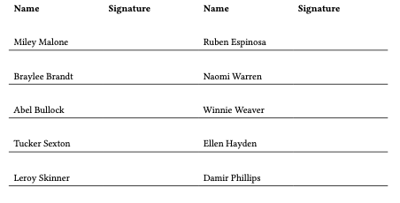

Attendance Sheets in Org Mode
Jan 25, 2025 07:17
This is another one of those days when I realized that I have been doing things the hard way. For years, I have been generating attendance sign-in sheets with Org Mode wonderful table editor. I would split the names into two columns and add a signature column after each. To ensure there was enough room for the signature, I would then stretch the signature column by adding phantom text to one of the rows like this (the names are from 1000randomnames.com):
| Miley Malone | xxxxxxxxxx} | Ruben Espinosa | xxxxxxxxxx} |
Then, to make sure there was enough vertical space, I would add some extra blank rows between each row, having to adjust several times to make everything fit. It worked fine once completed, but it was certainly a pain in the neck. After seeing Matt Maguire’s post, Exporting Org Mode Tables to LaTeX, I realized there had to be a better way.
Using the LaTeX tabularray package, I can simply do this:
| *Name* | *Signature* | *Name* | *Signature* | | Miley Malone | | Ruben Espinosa | | | Braylee Brandt | | Naomi Warren | | | Abel Bullock | | Winnie Weaver | | | Tucker Sexton | | Ellen Hayden | | | Leroy Skinner | | Damir Phillips | |
to produce:

Here is what the values of align do:
- Ordinarily,
hlineputs a border line on the top and bottom of every row. I don’t want them on the first row, sohline{3-Z}={solid}omits the first two lines. row{2-Z}={f,12mm}aligns the text to the bottom of the row and sets the row height to 12mm for all of the rows except for the first.colspec={XXXX}widens the row to the length of the line. Since the signature columns are blank, I don’t really need to specify particular column widths.
Now, instead of inserting and deleting rows and setting horizontal lines manually, I can just adjust the row height as needed by changing one number. See the excellent tabularray documentation for other settings.